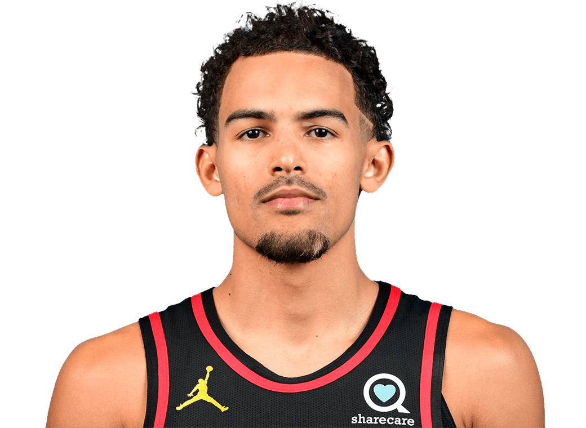

Atlanta Hawks

Atlanta Hawks so ameriška profesionalna košarkarska ekipa s sedežem v Atlanti. Hawksi tekmujejo v Nacionalni košarkarski zvezi (NBA) kot član vzhodne konference jugovzhodne divizije lige. Ekipa svoje domače tekme igra v dvorani State Farm Arena. Izvor moštva je mogoče izslediti do ustanovitve Buffalo Bisons leta 1946 v Buffalu v New Yorku, članu Nacionalne košarkarske lige (NBL) v lasti Bena Kernerja in Lea Ferrisa. Po 38 dneh v Buffalu se je ekipa preselila v Moline v Illinoisu, kjer so se preimenovali v Tri-Cities Blackhawks. Leta 1949 so se pridružili ligi NBA kot del združitve med NBL in Ameriško košarkarsko zvezo (BAA). Leta 1951 je Kerner ekipo preselil v Milwaukee, kjer so spremenili ime v Milwaukee Hawks. Kerner in ekipa so se leta 1955 ponovno preselili v St. Louis, kjer so leta 1958 osvojili svoj edini naslov prvaka lige NBA in se kvalificirali za igranje v finalu lige NBA v letih 1957, 1960 in 1961. Hawksi so igrali proti Boston Celtics na vseh štirih svojih potovanjih v finale lige NBA. St. Louis Hawks so se preselili v Atlanto 3. maja 1968, ko je Kerner prodal franšizo Thomasu Cousinsu in nekdanjemu guvernerju Georgie Carlu Sandersu. Hawksi imajo trenutno drugo najdaljšo sušo (za Sacramento Kings), saj v 64 sezonah niso osvojili naslova prvaka lige NBA. Edino prvenstvo franšize v ligi NBA in vsi štirje nastopi v finalu lige NBA so se zgodili, ko je bilo moštvo s sedežem v St. Louisu. Medtem so 48 let preživeli brez napredovanja čez drugi krog končnice v kateri koli obliki, dokler se leta 2015 končno niso prebili. Kljub temu so Hawksi ena od le štirih ekip lige NBA, ki so se kvalificirale za igranje v končnici lige NBA v 10 zaporednih sezonah v 21. stoletju. Ta podvig jim je uspel med letoma 2008 in 2017.
Trenutna ekipa

11. maja 2018 so Lloyda Piercea najeli Atlanta Hawks kot glavnega trenerja 21. junija so Hawksi izbrali Luko Dončića s tretjim izborom na naboru lige NBA 2018 in ga takoj zamenjali z Dallas Mavericks za zaščiteno prvo rundo 2019 ter pravice nabora za Traeja Younga. Atlanta Hawks je izbrala tudi Kevina Huerterja z 19. izborom in Omarija Spellmana s 30. izborom nabora lige NBA 2018. Špekuliralo se je, da je generalni direktor Hawksov, Travis Schlenk, sledil istemu načrtu za obnovo, s katerim je bil uspešen v Golden Statu.
Julija 2018 so Hawksi kupili Jeremyja Lina in zamenjali Dennisa Schröderja, potem ko je ta zahteval menjavo. Carmelo Anthony je bil pridobljen v trgovini, ki je vključevala Schröderja, vendar se mu je kasneje odpovedal z odkupom. Izven sezone je ekipa med drugimi igralci podpisala pogodbo z Vinceom Carterjem in Alexom Lenom. Februarja 2019 je bil Lin odkupljen in na koncu je podpisal pogodbo s Toronto Raptors.
Na naboru lige NBA leta 2019 so Atlanta Hawks dobili DeAndreja Hunterja, ki je bil izbran kot 4. izbor. Uporabili so tudi 10. izbor, ki so ga pridobili, ko so zamenjali Luko Dončića za Traeja Younga, da bi kupili Cama Reddisha.
23. januarja 2020 je bil Trae Young izbran za svojo prvo All Star Game. Bil je izbran za začetnika in je bil prvi igralec Hawksov, ki je začel na All Star tekmi po Dikembeju Mutombu leta 1998. 4. februarja 2020 so bili Hawksi vključeni v menjavo štirih ekip, v kateri so pridobili Clinta Capela in Nenêja. Capela je takrat zdravil poškodbo stopala in ni igral celotno sezono, ki je bila prekinjena zaradi protokolov lige NBA COVID-19. Nenê so se Hawksi odpovedali 6. februarja 2020. Carter se je po sezoni upokojil, potem ko je v ligi NBA preživel rekordnih 22 sezon.